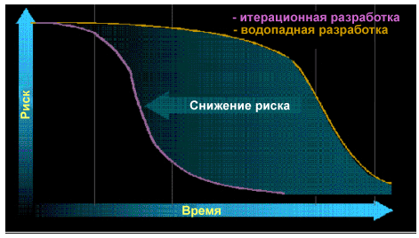

| Концепция: Ценность итерационного подхода |
 |
|
ОбсуждениеВ основе данного принципа лежат несколько обязательных условий. Первое - необходимо постепенно улучшать качество продукта, постоянно учитывая замечания и предложения. Это достигается разделением проекта на несколько итераций. В каждой итерации выполняются определенные требования, изменения в проекте, реализация и тестирование приложения, приближая продукт на шаг к окончательному решению. Это позволяет демонстрировать приложение конечным пользователям и другим заинтересованным лицам и быстро получать замечания и предложения. Таким образом можно понять, двигается ли коллектив в правильном направлении, удовлетворены ли заинтересованные лица прогрессом и надо ли изменять реализованные компоненты. Также, какие дополнительные компоненты нужны для увеличения полезности продукта. Ответив на эти вопросы, можно убедить заинтересованных лиц в том, что разрабатываемая система удовлетворит их потребности. Также менее вероятно спроектировать функции, которые не будут востребованы конечным пользователем. Второе необходимое условие - использовать демонстрации работы продукта и замечания и предложения пользователей для корректировки планирования. Вместо того, чтобы оценивать спецификации, например спецификацию требований, модели проектов или выполнение планов, лучше оценить работоспособность разработанного исходного кода. Это значит, что необходимо использовать результаты тестирования и демонстраций рабочего исходный кода заинтересованным лицам для того чтобы определить прогресс. Это даст понимание о текущем состоянии проекта, скорости продвижения и необходимости коррекций для успешного завершения проекта. Затем, эту информацию можно использовать для обновления общего плана проекта и разработки детального плана на следующую итерацию. Третье необходимое условие - принимать изменения и работать с ними. Сегодняшние приложения слишком сложны чтобы за один раз выполнить проектирование, реализацию и тестирование. Более эффективно для разработки приложений - принять неизбежность последующих изменений. Улучшение приложения происходит с помощью постоянного учета замечаний и предложений и постепенной доработки при итерациях. Для управления изменениями нужны соответствующие инструменты, чтобы не мешать креативности. Четвертое необходимое условие - уменьшение ключевых рисков на ранних этапах жизненного цикла, как показано на схеме ниже. Необходимо заниматься основными техническими, бизнес и программными рисками как можно раньше, а не откалывать до конца проекта. Для этого надо непрерывно оценивать риски, с которыми мы имеем дело, а также заниматься самыми рискованными задачами в ближайшей итерации. В успешных проектах ранние итерации включали вовлечение заинтересованных лиц в создание требований высокого уровня, включая проектирование архитектуры, реализацию и тестирование для смягчения технических рисков. Также при обсуждениях важно решить, какие из коробочных программных продуктов и многократно используемых ресурсов необходимо использовать.  Профайлы уменьшения рисков для водопадного и итерационного типов разработки. Главная цель итерационной разработки - уменьшить риски как можно раньше. Это достигается путем анализа, оценки и работы с максимальными рисками на каждой итерации (За дополнительной информацией обратитесь к справочному материалу: Итерационная разработка приложений). Дополнительные указания по организации этапов жизненного цикла проекта при итерационной разработке содержится в концепции: Итерация и концепции: Фаза. |
© Copyright IBM Corp. 1987, 2006. Все права защищены.. |